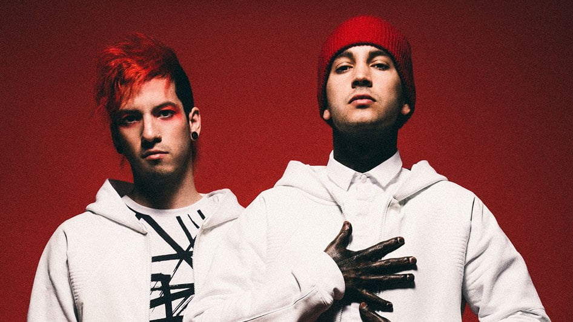
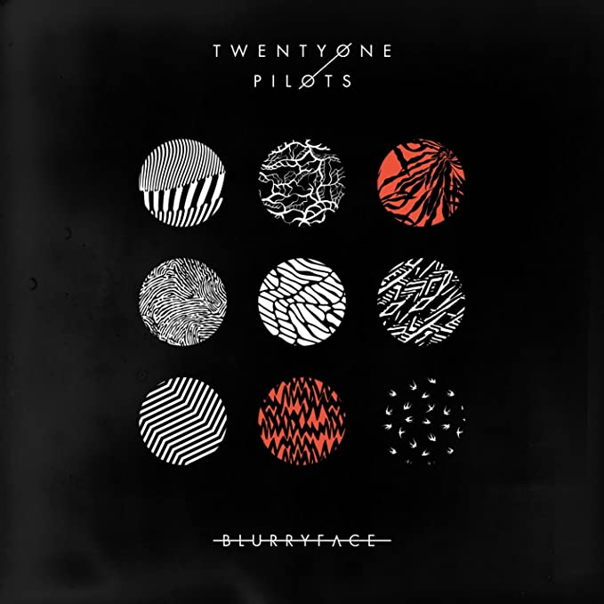

Twenty One Pilots é um duo americano de Colombus, Ohio formado atualmente por Tyler Joseph e Josh Dun. A Banda surgiu em 2009 e na época era formada por Tyler Joseph e seus amigos de faculdade Nick Thomas e Chris Salih, que tiveram a ideia do nome quando estudavam sobre a peça 'Al My Sons' de Arthur Miller que contava a historia de um homem que deve decidir o que é melhor para sua família depois de causar a morte de 21 pilotos na segunda guerra mundial. Eles lançam o álbum também chamado Twenty One Pilots em 2009 e fizeram um tour em Ohio.

Blurryface é o quarto álbum de estúdio do duo norte-americano Twenty One Pilots, e o segundo álbum da banda lançado pela Fueled by Ramen. O disco estreou na primeira posição da tabela musical dos Estados Unidos, Billboard 200, com 146 mil cópias vendidas. Um dos casos mais emblemáticos do album foi quando o personagem @bluryface tuítou duas imagens, cada uma com um trecho de 'Ride', antes mesmo dela ser lançada. Pouco tempo depois, o perfil escreveu: 'Agora você pode achá-lo. Vá achá-lo...' Os fãs pensavam que a publicação se tratava da música, mas, quando acharam, não era a canção, mas sim o álbum inteiro, vazado pelo Twenty One Pilots.
Músicas do Album
- Message Man
- Tear in My Heart
- Stressed Out
- Fairly Local
- Hometown
- Heavydirtysoul
- Polarize
- The Judge
- Lane Boy
- Not Today
- We Don't Believe What's on TV
- Ride
- Doubt
- Goner